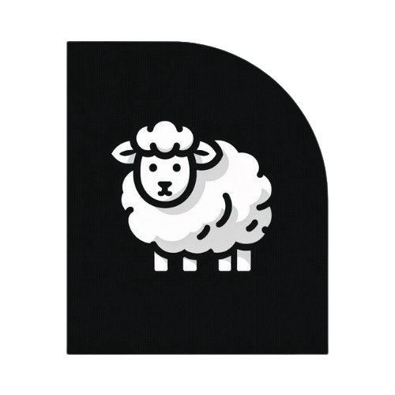
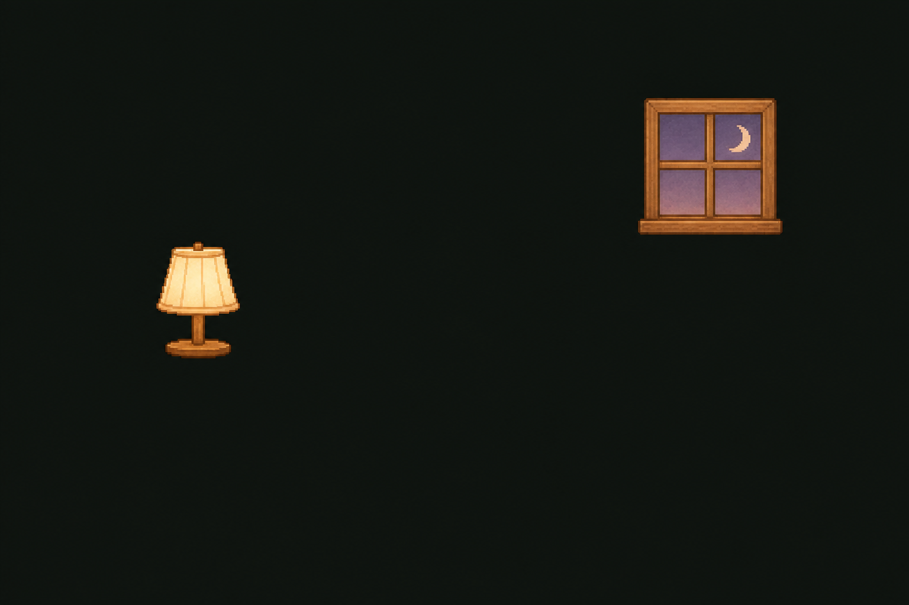
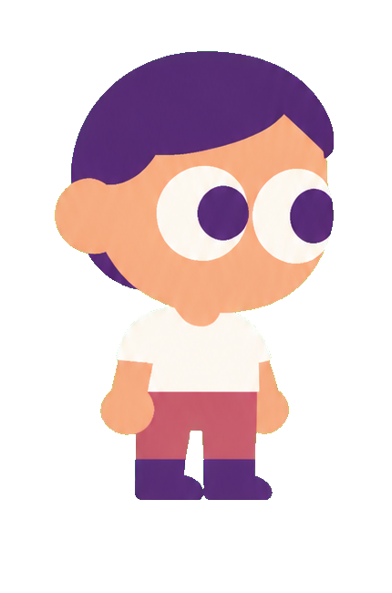
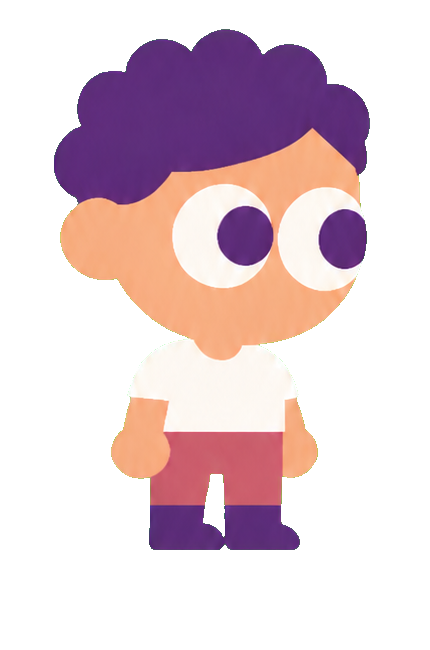
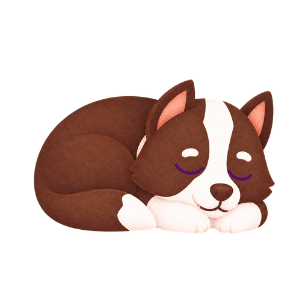
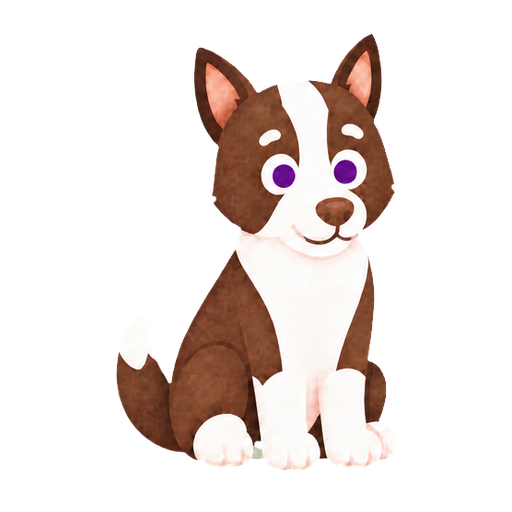
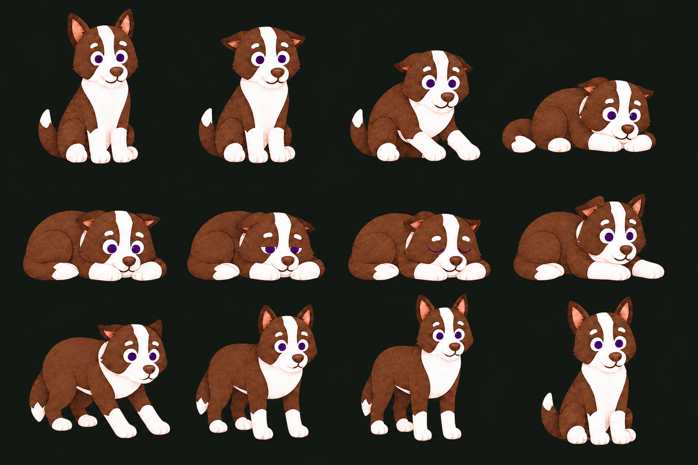

9:41▮▮▮ ⌁ ▰ ☾ Counting Sheep       Welcome home. Ollie saved you a quiet spot. PHONE AWAY10:30 PM→PHONE WAKES7:30 AM⌄ Bed 11:00 PMYou wake 7:00 AM30 quiet minutes before bed and after waking.Edit Wind Down Put phone away SLUMBER PARTYMoonlit neighbours› YouMossPhone is awayNight 2 of 7 ☾Moss completed 30 quiet minutes of Wind Down. Phone AwayPlan ›Start now · 30 min Ideas & sources ⌂Home☾Nights❧Farm⚙Settings